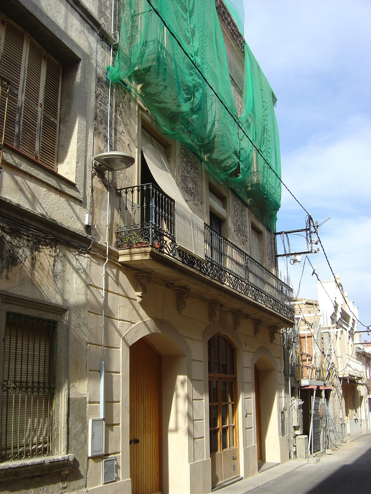
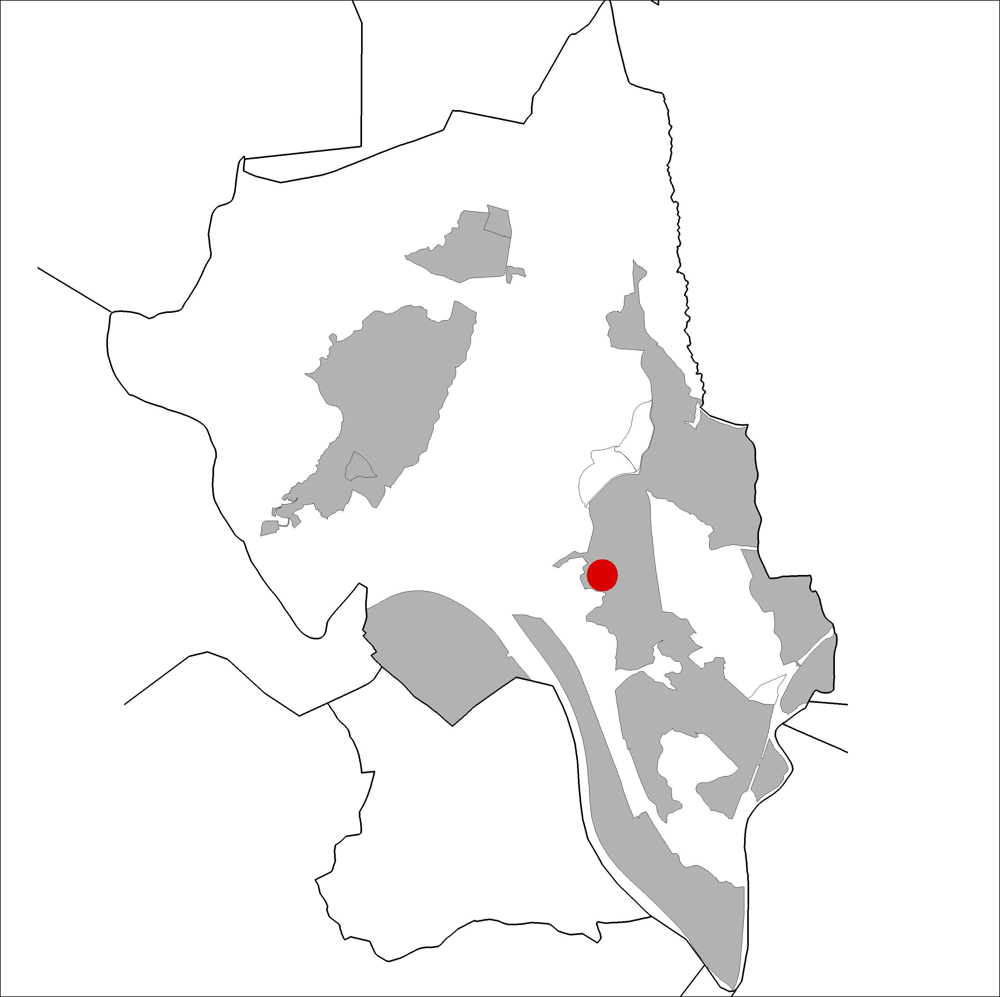

|  |  |
Nom de l’element: Cal Valent
Clau d’identificació: A.16
Nucli o indret: Nucli urbà (c/ Anselm Clavé 14).
UTM: X= 414.855, Y= 4.591.975.
Règim del sòl: sòl urbà.
1.1. Època de construcció i tipologia:
Edifici datat del 1739, d’estil vuitcentista, autor d’un mestre d’obres local. És un conjunt format per tres edificis: l’antiga masia, construïda al 1739 amb planta baixa i planta pis i una amplada de doble casal. A la mitgera sud es va afegir cap al 1870, ja desapareguda: una casa senyorial també de doble casal d’amplada i planta baixa amb dues plantes pis de generosa alçada, composició de façana simètrica i escala junt a la mitgera nord. Compartint la mitgera sud d’aquesta, hi havia una altra casa, de la mateixa alçada i la meitat d’amplada, amb una façana de l’estil de l’anterior, però no simètrica. A la façana de l’antiga masia hi ha la inscripció de CASA-BALEN 1739. Hi havia hagut la primera escola de nois coneguda al poble.
1.2. Estat de conservació:
En general, mitjà. Les estructures portants tenen un bon estat de conservació. Els forjats, les voltes, el paviment, les obertures i els acabats interiors es troben en estat mitjà. La façana presenta un dolent estat. Hi ha humitats.
1.3. Ús actual:
1.3. Ús actual:
Habitatge i magatzem.
1.4. Accés:
Accés fàcil des del c/ Anselm Clavé.
Conjunt de tres edificis, el més antic del 1739, d’estil vuitcentista.
3.1. Usos admesos:
Bihabitatge, residencial, oficines i serveis, recreatiu cultural i social, recreatiu de restauració.
3.2. Condicions d’ordenació:
Segons Pla Especial a redactar.
3.3. Accés i serveis:
Accés des del c/ Anselm Clavé.
BPU (Bé Protegit Urbanísticament)